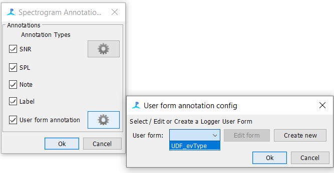

# PAMpal simple example
# Its on CRAN. Yay!
# install.packages('PAMpal')
# Sometimes I fix things and theyre only available on the GitHub version
# Right now there are some things that run a lot faster on teh GitHub version so I recommend installing that.
# updated 22-12-6 to include loop for PG event adding w/PAMmisc
rm(list=ls())
devtools::install_github('TaikiSan21/PAMpal')
devtools::install_github('TaikiSan21/PAMmisc')
library(PAMpal)
library(PAMmisc)
# Start by creating a "PAMpalSettings" object. This keeps track of what data you want to process and what processing you want to apply to it.
# Change paths below to your DB and binary folder. Can just be the highest level binary folder for that drift - it will add all files within that folder recursively through subfolders.
# This will also ask you to type in some parameters for calculations in your console. You can just hit ENTER to accept defaults for all of these, they aren't relevant to the GPL calculations only for clicks.
pps <- PAMpalSettings(db = 'Path to database',
binaries = 'Path to binaries',
# these parameters are only for the click detector - can ignroe
sr_hz='auto',
filterfrom_khz=0,
filterto_khz=NULL,
winLen_sec=.0025)
# Now tell it to process your data. Id is optional and serves no function, but can be useful to tell data apart at a later point in time. Here mode = 'recording' tells it how to organize your data. Most of the time we are working with data that have been marked manually into events, so PAMpal wants to organize things into events. mode='db' uses the events in the database, and only processes the detectoins you've marked out. In this case we just want to process everything, which is what mode='recording' does. It will group them into events by recording file.
# This might take some time to read in events after processing in order to get the time
#data <- processPgDetections(pps, mode='db', id='Minke_CCES_019')
data <- processPgDetections(pps, mode='recording', id='Species_Project_Drift#')
# And here's how you can get the detections information out of "data" as a dataframe. Time column is "UTC", other columns are stuff it measured.
gplDf <- getGPLData(data)
# Now we can add the wav files to this data. You might get a warning about "startSample", its safe to ignore that.
data <- addRecordings(data,
folder='Path to wav files')
# that data is stored here as a dataframe. Has "start" & "end" as POSIXct and the fulle path to the file as "file"
wavDf <- files(data)$recordings
# add number of detections to this
nDets <- sapply(events(data), nDetections)
nDets <- data.frame(join=names(nDets), nDets=nDets)
wavDf$join <- basename(wavDf$file)
wavDf <- left_join(wavDf, nDets)
wavDf$join <- NULL
wavDf$nDets[is.na(wavDf$nDets)] <- 0
nfiles =round(nrow(wavDf)*.2)
randStart =sample(1:5,1)
wavDf=wavDf[round(seq(randStart, nrow(wavDf), length.out = nfiles)),]
# If we care about assigning some kind of initial label to these detections. Otherwise ignore.
data <- setSpecies(data, method='manual', value='InitialGPL')
# Add events from wavDf loop
for(e in 1:nrow(wavDf)) {
thisEv <- data[[basename(wavDf$file[e])]]
# this will get all detector types, if just one type is wanted can be simplified to ex. uids <- unique(getGPLData(thisEv)$UID)
uids <- unique(unlist(lapply(getDetectorData(thisEv), function(x) {
if(is.null(x)) return(NULL)
x$UID
})))
addPgEvent(db = files(thisEv)$db,
binary = files(thisEv)$binaries,
eventType = species(thisEv)$id,
UIDs = uids,
type = 'dg',
start = wavDf$start[e],
end = wavDf$end[e],
comment = paste0('Added by PAMpal, event ID: ', id(thisEv)))
}Detection
PAMGuard
*To view the Pamguard settings files used for each drift please click here.
Array
Depending on the drift that was processed, the array settings in Pamguard were updated to reflect the spacing between hydrophones and the hydrophone sensitivity. For our purposes we only used CH0 in Pamguard to run the detector. To view the Array Configuration files for each drift please click here* (insert link to storage place)
Decimation
Fin Whales
The Decimator in PAMGuard was set to decimate to 200Hz. Default filter settings were used.
Blue Whales
The Decimator in PAMGuard was set to decimate to 200Hz. Default filter settings were used.
Minke Whales
The Decimator in PAMGuard was set to decimate to 10kHz and used a Butterworth Low Pass Filter of 5kHz .
Brydes & Fin Whales (40 Hz)
Humpback & Gray Whales
For humpback and gray whales we decimated files to 10kHz (Figure X.) and used a Butterworth Low Pass Filter of 5kHz (Figure x).
Figure x. Settings used in the decimator module in Pamguard to run the humpback and gray whale GPL detector. Figure x. Low Pass Filter for Humback and Gray whale GPL detector
Fin Whale Click Detector
In order to detect 20Hz fin whale pulses, we ran a click detector in PAMGuard.
Click Detector Settings
- Click detection parameters were set to the following (see figures x-xx)
Filter Settings
Digital Pre Filter Settings
Digital Trigger Filter Settings
Click Classifier Settings
- A click classifier with a frequency sweep was set up in order to classify the fin whale 20Hz pulses. The setting are below in Figure x. For the classifier itself, only the Spectrum Tab settings were changed. The rest of the tabs were left as default.
Once these settings have been input into the previous modules, make sure to save the settings file using the Data Managment Google Doc as a guide. The naming scheme should have the PG version_DetectorType_Project_Deployment#.
- Ex. PG_2_02_02_FinClick_ADRIFT_049.psfx
Run all drifts with the same settings.
Spectrogram Annotation Setup
Once a drift has completed its run. Save and close PAMGuard.
Make a copy of the database that was run and place it in a new folder (this is the copy that you will be adding events to).
Open the database in PAMGuard Viewer Mode
- Add the spectrogrm annotation module (figure x)
- Add a new user form under the spectrogram annotation module by clicking on the settings gear icon.
- Edit the form and add a LookUp table with the following titles
- In the lookup editor, add in the four categories to annotate the spectrogram module with.

Click ok on all the open dialog boxes. Click file->save data.
Close PAMGuard Viewer Mode and re-open to see the drop down options you created.
GPL Settings
- We started with basic GPL settings from Tyler Helble’s PARM files and modified them to fit our data
- We tested modified settings on clips that contained our species of interest until we were happy with the detectors performance
- We then processed an entire drift’s recordings and looked at the detector’s performance in Pamguard Viewer Mode by spot checking that calls were being picked up by the detector
- Once we were satisfied that the detector was doing it’s job, we processed the rest of the drifts
- For this detector, our aim was to over-detect and then sort out the differences using a classifier
Blue Whales
Minke Whales
Brydes & Fin Whales (40 Hz)
Humpback & Gray Whales


Detection Group Localizer Settings (GPL only)
In order for PAMpal to interact with the GPL detections we added in the Detection Grouper Module. This allows PAMpal to create events and push them back in the SQLite database in PAMGuard.

Figure x. Detection Grouper Mark Display Settings Figure X. Detection Grouper Data Selection Settings 
Figure x. Detection Grouper Annotation Settings It is important to note that both the “Text” and “User Form” annotation boxes must be selected here.
To setup the user form annotation (click on the gear icon)
Create new user form
Label the form “evType” then click ok (see figure X)

Figure x. Adding in a user form for the Detection Grouper in Pamguard Next click “edit form”
Add a lookup table and fill it out exactly as follows (see figure x.)
Title: eventType
PostTitle: eventType
DbTitle: eventType
Topic: DGEventType

Figure x. Editing the user form for the detection grouper to work with the GPL detections
Add selection drop down by right clicking on ‘= no selection =’ and selecting ‘Edit list’
Click ‘Add item’ and fill in species specific options
- See ‘Species Specific Drop Down List’ below for what items to include

Click ‘Ok’ to close all of the tabs and return to Pamguard Viewer window
Next, set up the Spectrogram Annotation
Go to File > Add Modules > Utilities > Spectrogram Annotation

Under ‘Settings’, go to Spectrogram Annotation settings and click on the gear icon next to ‘User form annotation’
Click on the ‘User form’ drop down, select ‘UDF_evType’, and click Ok to return to the Pamguard Viewer window

Right click on the spectrogram and go to Settings
Ensure both the ‘Detection Grouper’ and ‘Spectrogram Annotation’ boxes are checked and click Ok
Go to File > Save Data and close Pamguard
Species Specific Drop Down List
Blue Whales
Minke Whales
B - Boing
CB - Cutoff Boing
UB - Unknown Biological Sound
UA - Unknown Anthropogenic Sound
Brydes & Fin Whales (40 Hz)
Humpback & Gray Whales
PAMGuard Output
All detections were saved to the binary files and all other data were saved to a SQLite database
Figure x. Storage Options Settings for PAMGuard
PAMpal
- The data were then imported into PAMpal and events were created and put back into the PAMGuard database. Events were defined as 6 minute periods of continuous recordings for ADRIFT and 2 minutes for the CCES 2018 data set (limited to duty cycle 2 on 18 off) . *Add in PASCAL when we get to it.
Stratified Sub-sampling
Due to the nature of this large data set we decided to use a stratified sub-sampling method to randomly sample 20% of all events for validation.
*Add in Kaitlin’s code
Validation
Once you have followed the code above to subsample your data, make a copy of the database in a ‘Data Validated’ folder and reopen the database in Pamguard Viewer
Go to File > Add Modules > Displays > User Display

Name the new user display ‘Subsample’
Click on the new subsample tab and go to User Display > New Detection Grouper data display
Your subsampled data should then be listed with associate marker colors
Validate each subsampled wav file by scrolling in the spectrogram to the file and boxing/validating all detections using the drop down options specified above
Refer to species specific methods below for more validation information/guidelines
Species Specific Validation Methods
Fin Whales
Blue Whales
Minke Whales
Method for boings cutoff at the start or end of file (only applies to subsampled data to be validated)
If the detector consistently picks up cutoff boings AND you think they can be picked up easily using manual effort (there is enough signal to know it is a boing) -- then box these partial detections and label them as ‘Cutoff Boing’ (can be helpful as they note the occurrence of these calls during this time selection)
- The box should go to absolute zero (hug that left edge), as we can later use this demarcation to identify potential calls that are incomplete (if that is important for downstream processing)
Method for false dectections
- Ignore them